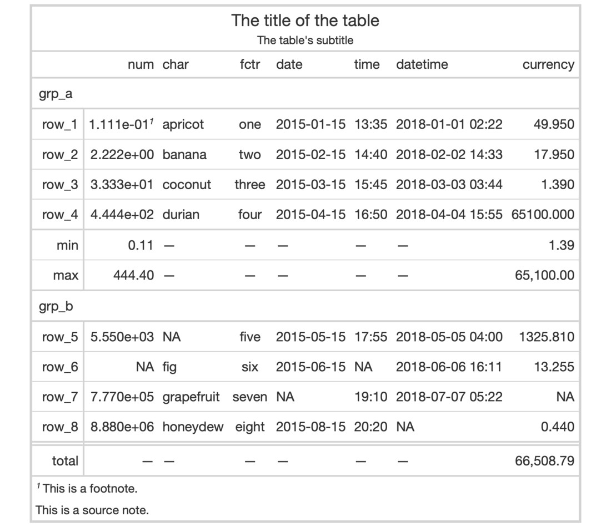
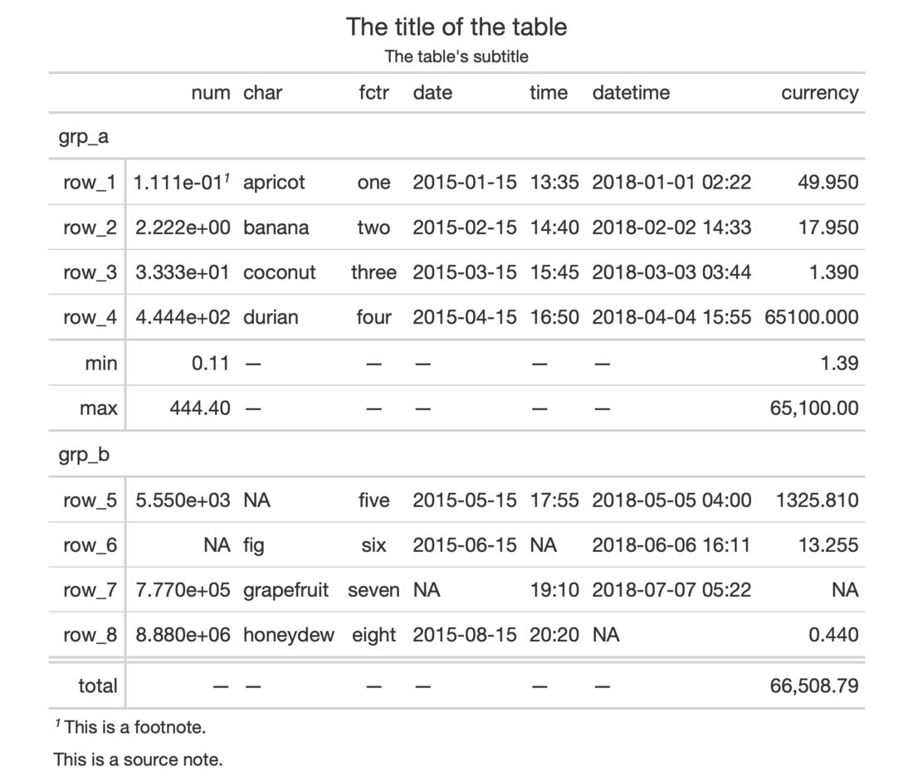

| opt_table_outline {gt} | R Documentation |
This function puts an outline of consistent style, width, and color
around the entire table. It'll write over any existing outside lines so long
as the width is larger that of the existing lines. The default value of
style ("solid") will draw a solid outline, whereas a value of "none"
will remove any present outline.
opt_table_outline(data, style = "solid", width = px(3), color = "#D3D3D3")
data |
A table object that is created using the |
style, width, color |
The style, width, and color properties for the table
outline. By default, these are |
An object of class gt_tbl.


9-6
Other Table Option Functions:
opt_align_table_header(),
opt_all_caps(),
opt_css(),
opt_footnote_marks(),
opt_row_striping(),
opt_table_font(),
opt_table_lines()
# Use `exibble` to create a gt table with
# a number of table parts added; have an
# outline wrap around the entire table by
# using `opt_table_outline()`
tab_1 <-
exibble %>%
gt(rowname_col = "row", groupname_col = "group") %>%
summary_rows(
groups = "grp_a",
columns = c(num, currency),
fns = list(
min = ~min(., na.rm = TRUE),
max = ~max(., na.rm = TRUE)
)) %>%
grand_summary_rows(
columns = currency,
fns = list(
total = ~sum(., na.rm = TRUE)
)) %>%
tab_source_note(source_note = "This is a source note.") %>%
tab_footnote(
footnote = "This is a footnote.",
locations = cells_body(columns = 1, rows = 1)
) %>%
tab_header(
title = "The title of the table",
subtitle = "The table's subtitle"
) %>%
opt_table_outline()
# Remove the table outline with the
# `style = "none"` option
tab_2 <-
tab_1 %>%
opt_table_outline(style = "none")